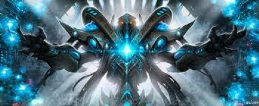

Robert Clotworthy
Robert Clotworthy is the voice actor for Raynor Throughout the series. He is best known for this Role and being the narrator for the History Channel Anchient Alians

At the start of the storyline, he is a marshal of the planet Mar sara, which gets overrun with zerg in the first few missions of starcraft 1, leading to his involvement with the sons of Korhal, and therefor Acturus Mengsk and Sarah Kerrigan, whom he enters a relationship with, to Mengsks disapproval. However, by the end of the terran campaign mission, he turns against Mengsk, dissallusiouned by Mengsks actions which led to the massacure of the everyone on Tarsonis, a major center of power for the Confederecy, by using the psi emmitters to atract the zerg to the planet. Raynor, from that point on, led the Splinter group that later becomes known as Raynors Raiders, and became the major rebel group that fought against the Dominion, and by extention, mengsk. He is also the Protagonist in starcraft 2, wings of liberty.
Jim Raynor is a rather simple man, being a war vet and an ex-outlaw before he got his fateful job as the marshal of Mar Sara.


She was an agent of the confederation, as a part of the ghost program, which was a group of psychic spec ops group that were often mindwiped to ensure thier loyalty. Keriogan, however became the second in comand of the sons of Korhal, and was fiercly loyal to him, and entered a romantic relationship with Jim Raynor. However, during the battle of Taris, Mengsk betrayed her, abandoning her on the planet to the zerg after she fufilled her mission to prevent the Protoss expeditionary forces from distracting the zerg. Unfortounately, thanks to her psychic potential,she was captured by the insectoid Zerg and infested, turning her into a human/Zerg hybrid completely under the control of the Zerg Overmind. She becomes one of the Zerg's most powerful agents, but when the Terran Dominion destroyed the overmind in the events of Starcraft Brood war, she was freed from its influence, and revealed herself as a shrewed manipulator, crushing the Dominion's expeditionary force, then wreacking havoc on the 3 main power blocks, The protoss, The terran Dominion, and Raynors Raiders. Then until the events of starcraft 2, she dissappeared with the zerg

Arcturus the son of Angus mengsk, and was left as the only survivor of his house when 3 Confederate Ghosts killed his family when his house was leading a rebellion. Later, he created and led the Sons of Korhal to dismantle the Confederecy, with the unstated goal of controling the Sector. Sara Kerrigan became his second in command, but he hid the fact that he knew that she was one of the ghosts that killed his family and that he would make her pay, even though as a ghost, she does not remember the operation, and that since she is a ghost, she could read thoughts. At the battle for Tarsonis, when he was confidant in his victory, he made his 2 most dangrous enemies in his arrogance. He left Kerrigan to die to the zerg, creating the queen of blades, and he throughly alianated Jim Raynor, both through his actions and words as he felt he no longer needed to hide it, leading Raynor to break off from the Sons of Korhal with his men, later forming Raynor's Raiders.

Artanis is the primary Protoss protagonist and player character in the StarCraft franchise. Artanis is a high templar and a military commander introduced in Brood War. The character also appears in the novels Queen of Blades and Twilight. Later retcons have made Artanis the identity of the nameless 'Executor' for the Protoss campaign in StarCraft.
n ambitious leader, Artanis is the youngest templar to achieve the rank of praetor and executor. Artanis holds Tassadar in high esteem and despite being a strong believer in Khalai system, he also holds to the idea of reunification with the Nerazim and Tal'Darim. Artanis is responsible for the initial defense of Aiur alongside Fenix before being dispatched to arrest Tassadar by Aldaris; Artanis, however, sides with Tassadar and helps him defeat the Overmind. Artanis later organizes the evacuation of his now devastated home world of Aiur, and with Zeratul undertakes measures to cleanse the Zerg presence on Shakuras through the use of a Xel'Naga temple. When Sarah Kerrigan's actions result in the deaths of Aldaris, Fenix and Raszagal, Artanis commands a fleet to bring Kerrigan to justice on Char, and despite allying with both the Dominion and the UED remnants, his forces are defeated by her Zerg. Artanis returns to Shakuras to rebuild the Protoss civilization; with Zeratul having disappeared, Artanis becomes the hierarch of the unified Protoss Protectorate, the Daelaam, but struggles with reintegrating the two estranged branches of his people, with many of the Aiur survivors desiring to retake their home world. He makes a brief appearance in Wings of Liberty in the vision of the Protoss's last stand against the hybrids and their Zerg swarm.

Gerard DuGalle is the commanding admiral of the United Earth Directorate's expeditionary force to the Koprulu Sector. DuGalle only appears in Brood War and is voiced by Jack Ritschel. Considered the UED's most capable military leader, DuGalle, a Frenchman, is a staunch believer in the UED's mission to pacify the sector and carries out his orders with precision. In Brood War, DuGalle leads the UED as it conquers the Terran Dominion; however, despite his experience, DuGalle believes misinformation planted by former Confederate soldier Samir Duran regarding a psi disruptor, a device that disrupts Zerg communications, on Tarsonis. When DuGalle's lifelong friend Alexei Stukov abandons the fleet, DuGalle allows Duran to assassinate Stukov as a traitor, only realizing his mistake too late. Nevertheless, DuGalle acts to prevent Duran destroying the psi disruptor and uses it to capture the Zerg Overmind on Char. However, as a result of demoralization, limited manpower and an alliance of enemies led by Kerrigan, the fleet is eventually pushed back and when a final attempt to recapture Char fails, DuGalle orders the retreat. Shortly before the UED fleet is overtaken by Zerg and destroyed, DuGalle composes a letter to his wife in which he admits responsibility for his closest friend's death and commits suicide by a gunshot to the head.
Tassadar is a high templar who holds the rank of executor in the Khalai military. He appears in StarCraft and in several novels, most notably Queen of Blades. Tassadar is voiced by Michael Gough in StarCraft, with Michael Dorn playing the part in later appearances. Described as being fascinated with, if somewhat wary of, the dark templar, Tassadar is the commander of the fleet that made first contact with the Terrans by destroying their colony of Chau Sara to contain Zerg infestation. However, Tassadar eventually disregards his orders to continue destroying worlds with no concern for the Terrans, and instead engages the Zerg by conventional means. After tracking the Zerg to their homeworld of Char, he encounters the dark templar Zeratul and Jim Raynor, forging a friendship with the two and learning how to use his psionic powers in conjunction with the powers of the dark templar. The Khalai government sees Tassadar's consortion with the dark templar as heretical and as a bigger threat to their society than the Zerg invasion of the Protoss homeworld Aiur, sending Aldaris and Artanis to arrest him. Artanis however, along with Fenix, sides with Tassadar, sparking a civil war between Tassadar's followers and the government. The conflict is only ended when Tassadar demonstrates the effectiveness of the dark templar against the Zerg. With Raynor, Zeratul and Fenix, Tassadar breaks through the Zerg defences on Aiur to the Zerg Overmind; Tassadar channels both his own psionic energies and those of the dark templar through the hull of his flagship and crashes it into the Overmind. The resulting discharge of energy destroys the Overmind and transcends Tassadar to a new level of spiritual existence; Metzen refers to this transformation as becoming a "twilight messiah".
Robert Clotworthy is the voice actor for Raynor Throughout the series. He is best known for this Role and being the narrator for the History Channel Anchient Alians

Glynnis Talken Campbell is the voice actor for Kerrigan in Starcraft 1 and brood war. She is a known romance Writer, musician, and a voice actor.

Tricia Helfer is a canadian actress and former model, well known for playing kerrigan in Starcraft 2 and for playing the humanoid Cylon Number Six in Ronald D. Moore's re-imagined Battlestar Galactica television series.

James Harper is an American actor. Throughout his career, he has acted in many movies and guest-starred in a myriad television shows, such as Frasier, Matlock, NYPD Blue, Star Trek: Deep Space Nine, and JAG. He also played the role of Admiral Kelso in the 1998 film Armageddon. In addition to acting, Harper has contributed his voice to several video games, most notably StarCraft as Arcturus Mengsk, Resistance: Fall of Man, and Diablo. Harper reprised his role of Arcturus Mengsk in StarCraft II: Wings of Liberty and StarCraft II: Heart of the Swarm.

David Patrick Seitz is an American voice actor, ADR director and script writer known for his work for Bang Zoom! Entertainment, Viz Media, Funimation, New Generation Pictures, Studiopolis, Disney/Pixar, Riot Games and NYAV Post. He provided voices for English versions of Japanese anime and video games, including over 100 projects since his initial foray into the voice-over industry in 2000 with the Amazing Nurse Nanako OVA.He is also the voice actor for Artanis and the true form of Emil Narud. He is also the voiced Garrosh Hellscream and the replacement of Justin Gross for Arthas Menethil in Blizzard's Warcraft series.
He originally voiced a unit that did not make it into the final game. Chris Metzen then had him audition for the role Artanis. He did not know that he had gotten the part until StarCraft II: Wings of Liberty came out